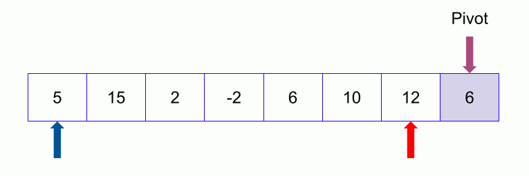

QUICK SORT

QuickSort is a Divide and Conquer algorithm. It picks an element as pivot and partitions the given array around the picked pivot.The key process in quickSort is partition(). Target of partitions is, given an array and an element x of array as pivot, put x at its correct position in sorted array and put all smaller elements (smaller than x) before x, and put all greater elements (greater than x) after x.
Example
In the array {52, 37, 63, 14, 17, 8, 6, 25} , we take 25 as pivot. So after the first pass, the list will be changed like this. Hence after the first pass, pivot will be set at its position, with all the elements smaller to it on its left and all the elements larger than to its right.
Algorithm Quicksort(A[l..r])
//Sorts a subarray by quicksort
//Input : A subarray A[l..r] of A[0..n-1], defined by its left and right indices // l and r
//Ouput : Subarray A[l..r] sorted in nondecreasing order
if l < r
s ← Partition(A[l..r]) // s is a split position
Quicksort(A[l..s-1])
Quicksort(A[s+1..r])
Algorithm Partition(A[l..r])
//Partitions a subarray by using its first element as a pivot
//Input : A subarray A[i..r] of A[0..n — 1}, defined by its left and right //indices l and r (l < r)
//Ouput : A partition of A[l..r], with the split position returned as //this function’s value
p ← A[l]
i ← l; j ← r + 1
repeat
repeat i ← i+1 until A[i] >= p
repeat j ← j-1 until A[j] <= p
swap(A[i] , A[j])
until i <=j
swap(A[i] , A[j]) // undo last swap when i >=j
swap (A[l] , A[j])
return j
Time Complexity
Best case : O(nlogn)
Worst case : O(n2)
Average case : O(nlogn)
Space Complexity :
O(logn)